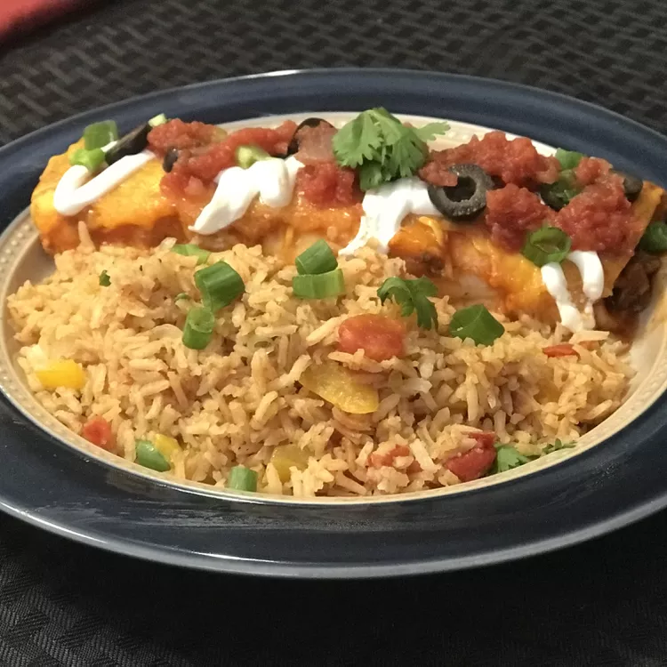

Spanish Rice

Description
Very easy, very good Spanish rice!
Ingredients
- 1 tablespoon vegetable oil
- 2 cups uncooked long-grain white rice
- ¼ onion, chopped
- 1 green bell pepper, chopped
- salt and pepper to taste
- 1 (14.5 ounce) can stewed tomatoes
- 4 cups water
Steps
- In a large skillet, combine oil, rice, onion, green pepper and salt and pepper until the rice is a light brown color. Remove skillet from stove.
- Mix tomatoes into the mixture. Pour in water (it should cover the entire mixture; use more if necessary). Return the skillet to the stovetop and bring the mixture to a full boil; salt and pepper to taste. When the mixture begins to boil, cover the skillet, and reduce heat to a simmer. Cook 12 to 15 minutes and never, I mean NEVER, remove the cover. After 12 to 15 minutes, turn stove off and let stand for another 12 to 15 minutes. DO NOT remove cover until the final 15 minutes has elapsed!
Back to homepage